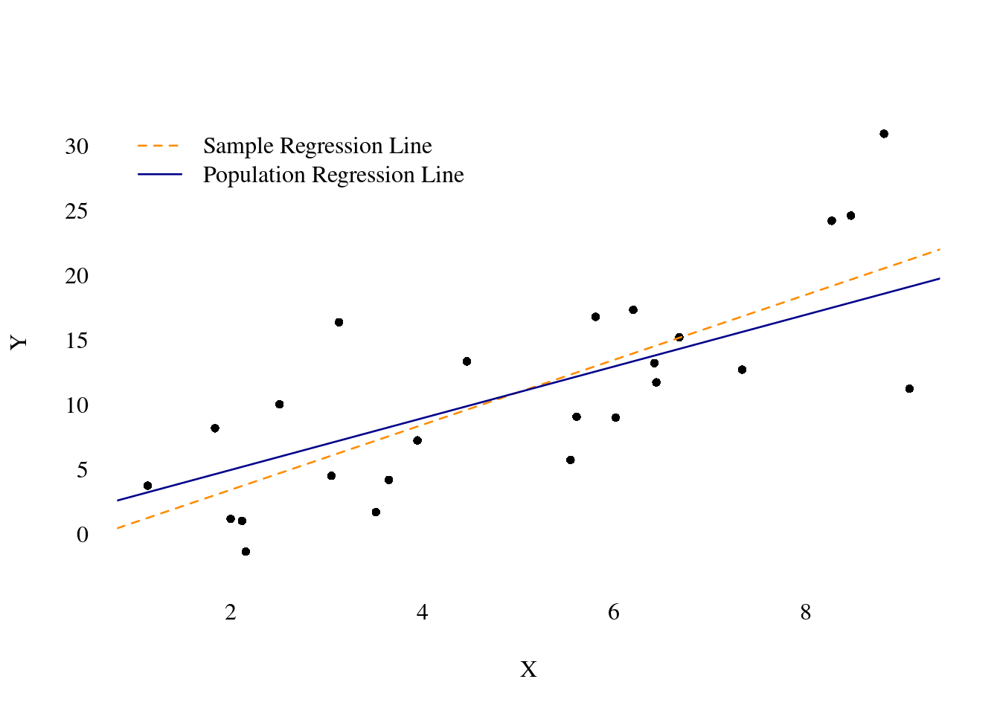
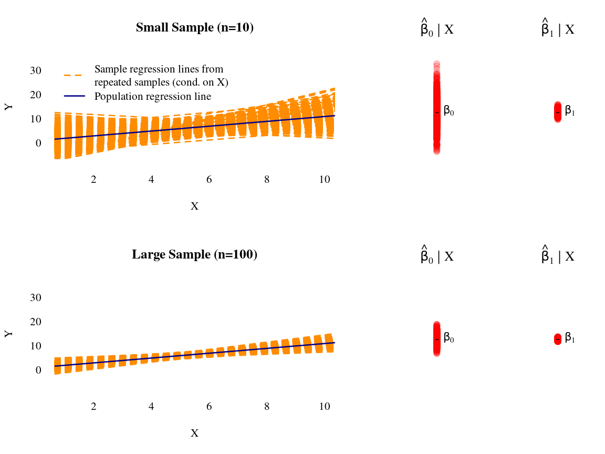

3.2 Ordinary Least Squares Estimation
There are many ways to estimate the parameters \(\beta_0\) and \(\beta_1\) of the simple linear regression model in . In the following, we will derive the Ordinary Least Squares (OLS) estimator using a ``mechanical’’ approach. In the next chapter, we will use an alternative approach () which provides a perspective that is particularly interesting/useful in econometrics. You will see that the properties of the estimators for \(\beta_0\) and \(\beta_1\) crucially depend on our assumption regarding the error terms \(\varepsilon_i\) and the explanatory variables \(X_i\).
3.2.1 Terminology: Sample Regression Line, Prediction and Residuals
Let us define some necessary terms. Call \(\hat\beta_0\) our estimate of \(\beta_0\) and \(\hat\beta_1\) our estimate of \(\beta_1\). Now, define the predicted value, \(\hat Y_i\), of the dependent variable, \(Y_i\), to be
\[\begin{align}
\hat Y_i&= \hat\beta_0 + \hat\beta_1 X_i\label{eq:fitted_y}
\end{align}\]
This is just the prediction of the dependent variable, \(Y_i\), given the value of \(X_i\) and the estimates \(\hat\beta_0\) and \(\hat\beta_1\). Equation defines the sample regression line.
Define the , \(\hat\eps_i\), as the difference between the observed value, \(Y_i\), and the predicted value, \(\hat Y_i\): \[\begin{align*} \hat\eps_i&= Y_i - \hat Y_i \\ &= Y_i - \hat\beta_0 - \hat\beta_1 X_i \end{align*}\] The residual, \(\hat\eps_i\), is the vertical distance between the observed value, \(Y_i\), and the sample regression line, i.e., the prediction, \(\hat{Y}_i\), of \(Y_i\).
We must make an important distinction between the residuals, \(\hat\eps_i\), and the errors \(\varepsilon_i\). \[\begin{align*} \hat\eps_i &= Y_i - \hat\beta_0 - \hat\beta_1 X_i \quad\text{(computable)}\\ \varepsilon_i &= Y_i - \beta_0 - \beta_1 X_i \quad\text{(unobservable)} \end{align*}\] Because \(\beta_0\) and \(\beta_1\) are unknown, we can never know the value of the error terms \(\varepsilon_i\). However, because we actually come up with the estimates \(\hat\beta_0\) and \(\hat\beta_1\), and because we observe \(X_i\), we can calculate the residual \(\hat\eps_i\) for each observation. This distinction is important to keep in mind.
Note that we can write \[\begin{align*} \varepsilon_i &= Y_i - \beta_0 - \beta_1 X_i\\ &= Y_i - E[Y_i | X_i]. \end{align*}\] But for this to make sense, we needed to impose the exogeneity assumption that \(E[\varepsilon_i | X_i]=0\), since only then we can identify the population regression line \(\beta_0 + \beta_1 X_i\) using the conditional mean of \(Y_i\) given \(X_i\).
3.2.2 Deriving the Expression of the OLS Estimator
The method of () estimation has a long history and was first described by Legendre in 1805 – although Karl Friedrich Gauss claimed to use OLS since 1795. In 1809 Gauss published his work on OLS which extended the work of Legendre.
The idea of OLS is to choose parameter values that for a given data set. These minimizing parameters are then the estimates of the unknown population parameters. It turns out that the OLS estimator is equipped with several desirable properties. In a sense, OLS is a purely method. We will see that it is equivalent to an alternative estimation method called methods of moments which have a more profound econometric motivation, given a certain set of (moment-)assumptions.
Our objective is to find the parameter values \(\hat\beta_0\) and \(\hat\beta_1\) that minimize the sum of squared residuals, \(S_n(b_0,b_1)\), for a given sample (i.e., for given data) \(((Y_1,X_1),\dots,(Y_n,X_n))\) of the random sample \(((Y_1,X_1),\dots,(Y_n,X_n))\), where
\[\begin{align*}
S_n(b_0, b_1)&=\sum_{i=1}^n \hat{\eps}_i^2 \\
&=\sum_{i=1}^n (Y_i - \hat Y_i)^2 \\
&= \sum_{i=1}^n (Y_i - b_0 - b_1 X_i)^2 \\
&= \sum_{i=1}^n (Y_i^2 - 2 b_0 Y_i - 2b_1 Y_i X_i + b_0^2 +
2b_0 b_1 X_i + b_1^2 X_i^2).
\end{align*}\]
Now partially differentiate the last line with respect to \(b_0\) and \(b_1\), respectively.
\[\begin{align*}
\dfrac{\partial S_n(b_0,b_1)}{\partial b_0}&= \sum_{i=1}^n \left(-2Y_i + 2b_0 +2 b_1 X_i\right)\\
\dfrac{\partial S_n(b_0,b_1)}{\partial b_1}&= \sum_{i=1}^n\left(-2Y_i X_i + 2 b_0 X_i +
2 b_1 X_i^2\right)
\end{align*}\]
Next, we want to find the minimizing arguments
\[(\hat\beta_0,\hat\beta_1)'=\min\arg_{(b_0,b_1)\in\mathbb{R}^2}S_n(b_0,b_1).\]
For this we set the two partial derivatives equal to zero which gives us two equations that fully determine the values \(\hat\beta_0\) and \(\hat\beta_1\):
\[\begin{align*}
n\hat\beta_0 - \sum_{i=1}^n Y_i+ \hat\beta_1 \sum_{i=1}^n X_i &=0\\
\sum_{i=1}^n\left(-Y_i X_i + \hat\beta_0 X_i +\hat\beta_1 X_i^2\right)&=0
% -\left(\sum_{i=1}^n Y_i X_i\right) + \hat\beta_1 \left( \sum_{i=1}^n X_i^2\right)&=0
\end{align*}\]
The two latter equations are known as the . It is easy to see from the first normal equation that the OLS estimator of \(\beta_0\) is
\[\begin{equation}
\hat\beta_0 = \bar{Y} - \hat\beta_1 \bar{X}
\end{equation}\]
Substituting \(\hat\beta_0\) into the second normal equation gives
\[\begin{align*} 0&=\sum_{i=1}^n\left(-Y_i X_i + ( \bar{Y} - \hat\beta_1 \bar{X}) X_i +
\hat\beta_1 X_i^2\right) \\
&= \sum_{i=1}^n\left(-X_i (Y_i - \bar{Y})+ \hat\beta_1 X_i(X_i - \bar{X})\right)\\
&=-\left(\sum_{i=1}^n X_i (Y_i - \bar{Y})\right) + \hat\beta_1 \left(\sum_{i=1}^n X_i (X_i - \bar{X})\right)\\
\end{align*}\]
Solving for \(\hat\beta_1\) gives
\[\begin{align*}
\hat\beta_1&=\dfrac{\sum_{i=1}^n (Y_i - \bar{Y})X_i}{\sum_{i=1}^n (X_i-\bar {X})X_i}\\\notag
&=\dfrac{\sum_{i=1}^n (Y_i - \bar{Y}) (X_i- \bar{X})}{\sum_{i=1}^n (X_i-\bar {X})(X_i - \bar{X})}\\\notag
&=\dfrac{\sum_{i=1}^n (X_i- \bar{X})Y_i}{\sum_{i=1}^n (X_i-\bar{X})^2}
\end{align*}\]
The last two lines follow from the that will be discussed in the exercises of this chapter.
Here is some -code for computing \(\hat{\beta}_0\) and \(\hat{\beta}_1\) for a given realization of the random sample \(((Y_1,X_1),\dots,(Y_n,X_n))\), i.e. for a given (well, here simulated) data set \(((Y_1,X_1),\dots,(Y_n,X_n))\).
n <- 25 # sample size
## simulate data
set.seed(3)
X <- runif(n, min = 1, max = 10)
error <- rnorm(n, mean = 0, sd = 5)
beta0 <- 1
beta1 <- 2
Y <- beta0 + beta1 * X + error
## save simulated data as data frame
data_sim <- data.frame("Y" = Y, "X" = X)
## OLS fit
lm_obj <- lm(Y~X, data = data_sim)
##
## Plot
par(family = "serif")
plot(x = data_sim$X, y = data_sim$Y, main="", axes=FALSE,
pch = 16, cex = 0.8, xlab = "X", ylab = "Y")
axis(1, tick = FALSE)
axis(2, tick = FALSE, las = 2)
abline(lm_obj, lty=2, lwd = 1.3, col="darkorange")
abline(a = beta0, b = beta1, lwd=1.3, col="darkblue")
legend("topleft",
col=c("darkorange", "darkblue"),
legend = c("Sample Regression Line",
"Population Regression Line"),
lwd=1.3, lty=c(2,1), bty="n")
## Estimates
coef(lm_obj)
#> (Intercept) X
#> -1.561339 2.512011The coefficients have the usual intercept and slope interpretation. That is, for the unknown parameters \(\beta_0\) and \(\beta_1\) we have that \[\begin{align*} \dfrac{\partial E[Y | X]}{\partial X} = \beta_1\qquad\text{with}\qquad E[Y | X] &= \beta_0 + \beta_1 X. \end{align*}\] That is, \(\beta_1\) is the true (unknown) of a one unit change in \(X\) on \(Y\). Therefore, \(\hat\beta_1\) is the of a one unit change in \(X\) on \(Y\): \[\begin{align*} \widehat{\dfrac{\partial E[Y | X]}{\partial X}} = \hat\beta_1\qquad\text{with}\qquad \widehat{E[Y | X]} &= \hat\beta_0 + \hat\beta_1 X. \end{align*}\]
3.2.3 Behavior of the OLS Estimates for Resampled Data (conditionally on \(X_i\))
Usually, we only observe the \(\hat{\beta}_0\) and \(\hat{\beta}_1\) computed for a given data set. However, in order to understand the statistical properties of the \(\hat{\beta}_0\) and \(\hat{\beta}_1\) we need to view them as random variables which yield different realizations in repeated samples generated from conditionally on \(X_1,\dots,X_n\). This allows us then to think about questions like:A first idea about the statistical properties of the estimators \(\hat{\beta}_0\) and \(\hat{\beta}_1\) can be gained using Monte Carlo simulations as following.
## Sample sizes
n_small <- 10 # small sample size
n_large <- 100 # large sample size
## True parameter values
beta0 <- 1
beta1 <- 1
## Generate explanatory variables (random design)
X_n_small <- runif(n_small, min = 1, max = 10)
X_n_large <- runif(n_large, min = 1, max = 10)
## Monte-Carlo (MC) Simulation
## 1. Generate data
## 2. Compute and store estimates
## Repeat steps 1. and 2. many times
set.seed(3)
## Number of Monte Carlo repetitions
## How many samples to draw from the models
rep <- 1000
## Containers to store the lm-results
n_small_list <- vector(mode = "list", length = rep)
n_large_list <- vector(mode = "list", length = rep)
for(r in 1:rep){
## Sampling from the model conditionally on X_n_small
error_n_small <- rnorm(n_small, mean = 0, sd = 5)
Y_n_small <- beta0 + beta1 * X_n_small + error_n_small
n_small_list[[r]] <- lm(Y_n_small ~ X_n_small)
## Sampling from the model conditionally on X_n_large
error_n_large <- rnorm(n_large, mean = 0, sd = 5)
Y_n_large <- beta0 + beta1 * X_n_large + error_n_large
n_large_list[[r]] <- lm(Y_n_large ~ X_n_large)
}
## Reading out the parameter estimates
beta0_estimates_n_small <- rep(NA, rep)
beta1_estimates_n_small <- rep(NA, rep)
beta0_estimates_n_large <- rep(NA, rep)
beta1_estimates_n_large <- rep(NA, rep)
for(r in 1:rep){
beta0_estimates_n_small[r] <- n_small_list[[r]]$coefficients[1]
beta1_estimates_n_small[r] <- n_small_list[[r]]$coefficients[2]
beta0_estimates_n_large[r] <- n_large_list[[r]]$coefficients[1]
beta1_estimates_n_large[r] <- n_large_list[[r]]$coefficients[2]
}Now, we have produced realizations of the estimators \(\hat\beta_0|X\) and \(\hat\beta_1|X\) conditionally on \[X=\begin{pmatrix}1&X_1\\\vdots&\vdots\\1&X_n\end{pmatrix}\]
and we have saved these realizations in beta0_estimates_n_small, beta1_estimates_n_small, beta0_estimates_n_large, and
beta1_estimates_n_large. This allows us to visualize the behavior of the OLS estimates for the repeatedly sampled data (conditionally on \(X_i\)).
## Plotting the results
library("scales") # alpha() produces transparent colors
## Define a common y-axis range
y_range <- range(beta0_estimates_n_small,
beta1_estimates_n_small)*1.1
## Generate the plot
par(family = "serif") # Serif fonts
## Layout of plotting area
layout(matrix(c(1:6), 2, 3, byrow = TRUE), widths = c(3,1,1))
## Plot 1
plot(x=0, y=0, axes=FALSE, xlab="X", ylab="Y", type="n",
xlim=c(1,10), ylim=c(-5,35), main="Small Sample (n=10)")
axis(1, tick = FALSE); axis(2, tick = FALSE, las = 2)
for(r in 1:rep){
abline(n_small_list[[r]], lty=2, lwd = 1.3, col="darkorange")
}
abline(a = beta0, b = beta1, lwd=1.3, col="darkblue")
legend("topleft", col=c("darkorange", "darkblue"), legend=c(
"Sample regression lines from\nrepeated samples (cond. on X)",
"Population regression line"),
lwd=1.3, lty=c(2,1), bty="n")
## Plot 2
plot(x=rep(0,rep), y=beta0_estimates_n_small, axes=FALSE,
xlab="", ylab="", pch=19, cex=1.2, ylim=y_range,
main=expression(hat(beta)[0]~'|'~X), col=alpha("red",0.2))
points(x = 0, y=beta0, pch="-", cex = 1.2, col="black")
text(x=0, y=beta0, labels = expression(beta[0]), pos = 4)
## Plot 3
plot(x=rep(0,rep), y=beta1_estimates_n_small, axes=FALSE,
xlab="", ylab="", pch=19, cex=1.2, ylim=y_range,
main=expression(hat(beta)[1]~'|'~X), col=alpha("red",0.2))
points(x = 0, y=beta1, pch="-", cex = 1.2, col="black")
text(x=0, y=beta1, labels = expression(beta[1]), pos = 4)
## Plot 4
plot(x=0, y=0, axes=FALSE, xlab="X", ylab="Y", type="n",
xlim=c(1,10), ylim=c(-5,35), main="Large Sample (n=100)")
axis(1, tick = FALSE); axis(2, tick = FALSE, las = 2)
for(r in 1:rep){
abline(n_large_list[[r]], lty=2, lwd = 1.3, col="darkorange")
}
abline(a = beta0, b = beta1, lwd=1.3, col="darkblue")
## Plot 5
plot(x=rep(0,rep), y=beta0_estimates_n_large, axes=FALSE,
xlab="", ylab="", pch=19, cex=1.2, ylim=y_range,
main=expression(hat(beta)[0]~'|'~X), col=alpha("red",0.2))
points(x = 0, y=beta0, pch="-", cex = 1.2, col="black")
text(x=0, y=beta0, labels = expression(beta[0]), pos = 4)
## Plot 6
plot(x=rep(0,rep), y=beta1_estimates_n_large, axes=FALSE,
xlab="", ylab="", pch=19, cex=1.2, ylim=y_range,
main=expression(hat(beta)[1]~'|'~X), col=alpha("red",0.2))
points(x=0, y=beta1, pch="-", cex = 1.2, col="black")
text(x=0, y=beta1, labels = expression(beta[1]), pos = 4)
This are promising plots:However, this was only a simulation for one specific data generating process. Such a Monte Carlo simulation does not allow us to generalize these properties. Next we use theoretical arguments to show that these properties also hold in general.